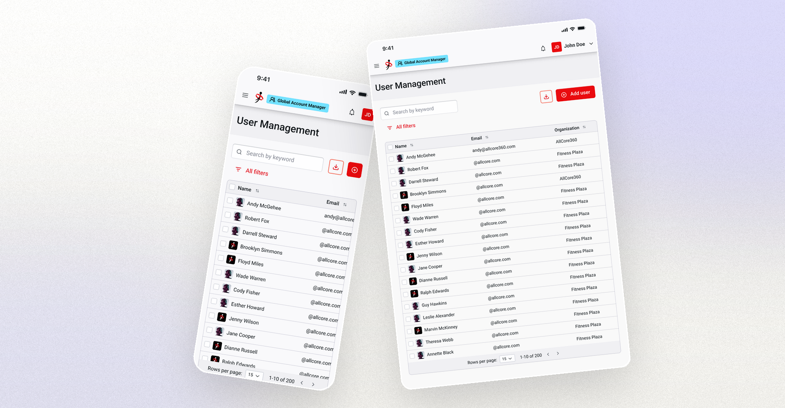

Countdown
Always shown before physical movement.
The control system for a physical therapy machine — one product, four surfaces, seven roles, and a touchscreen bolted to equipment in gyms and clinics.

AllCore360º has seven roles — GAM, AM, OA, FA-Admin, FA-User, Technician, Rider — but permissions aren't defined once. The same Organization Admin gets a full CRM on desktop and a deliberately narrower "Operator" view on the machine itself. The permission model gets redeclared per surface, not just per role.
Organization → Facility → Machine → Users → Riders
Every screen had to answer two questions: who's looking, and from which surface?
Same design tokens. Four different jobs to be done.
Full back office — organizations, facilities, machines, users, riders and reports.
The same account and management flows scoped for a phone — same Code Connect components, different layout rules.
What OA, FA and Rider see standing at the machine — session and evaluation flows, countdowns, no-connection states, emergency stop.
AllCore360º's own field employees — machine calibration, R/T axis setup, alarms, and onboarding a machine for the first time.
I built the design system in Figma — components, variables, Auto Layout, and shared Figma libraries — on top of Radix Themes' own structural conventions. Claude, run locally through Claude Cowork, acted as a technical thinking partner: reasoning through the 7-role × 4-surface permission model and the archive/cascade logic, running accessibility checks, critiquing new designs, and helping brainstorm and ideate new screens and components. Figma Make turned key flows into functional prototypes I could put in front of clients before anything reached development. Every ready frame in the Figma file is flagged "Ready for dev" — a lightweight status system that kept handoff honest.
AI didn't replace the design decisions — it removed the friction between making them and showing them working.
The Active Records table had its month-over-month badge next to the previous period's value instead of the current one, breaking the natural left-to-right read. The percentages didn't match (current − previous) / previous, so some arrows pointed the wrong way. Fixing it meant defining the rolling-period rule the whole table should follow, not just moving a badge.
| Record | Feb 2026 | Change | Jan 2026 |
|---|---|---|---|
| Active organizations | 44 | ↓ 12% | 50 |
| Active facilities | 78 | ↑ 4% | 75 |
| Active machines | 21 | ↑ 5% | 20 |
| Active riders | 55 | ↑ 10% | 50 |
| New riders | 23 | ↑ 15% | 20 |
Good product design isn't just the interface — it's making sure the interface never lies.
The SBC isn't just a touchscreen — it triggers real physical movement. Every ride and evaluation launch runs through a visible countdown (3… 2… 1… then a running timer) before the machine moves, so the rider is never caught off guard. The emergency-stop control has its own first-class states — pressed and released — each with a dedicated alert screen. And because the machine can lose its network connection mid-session, every key SBC screen has a systematically designed "No connection" counterpart, not a generic error toast.
Always shown before physical movement.
Pressed and released are first-class states.
Every key screen has a no-connection pair.
Safety-critical interfaces don't get a second draft. The countdown and the E-stop state existed before the rest of the screen did.
The design system runs on Radix Themes' own structural conventions — a 12-step accent (custom), neutral (slate), and semantic scales (green, red, amber, sky), each with alpha variants, medium radius, 100% scaling, and Roboto carrying a 9-step type scale — mapped directly to code through Figma variables and Code Connect, so engineering never had to guess a value across four surfaces.
Accent — custom, 12 steps
Neutral — slate, 12 steps
Semantic — solid (step 9)
Type — Roboto, 9 steps
Radius — medium scale
The theme locks Radix’s radius setting to medium. Components then pick from these six steps — buttons, inputs, cards, dialogs — instead of inventing a corner each time.
Space — 100% scaling
Spacing tokens at 100% scaling: the nine steps used for padding, gaps, and control heights across every surface.
Designing for seven roles across four surfaces — one of them physically moving — forced a clarity a single-surface product never would have required.